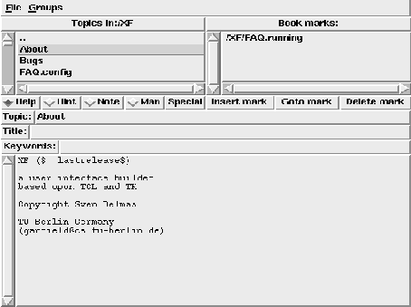

XFhelp is a general help program based upon Tcl/Tk . Different programs can use this program to provide help for themselves. The user can browse through the help pages, specify book marks, append notes etc.. Once xfhelp is started, all additional calls of xfhelp use the existing xfhelp, and just change the currently displayed contents. This program is part of the XF distribution, and is used to provide help for the user.

Figure: The xfhelp program
The menubutton (File) only contains a quit button. The menubutton (Groups) allows to jump directly between the help pages for the different programs. The upper left list contains the help pages at the current level. A help page is displayed by clicking on the list item. The upper right list contains the book marks. Below the two lists, the currently selected help page is displayed. This help page contains the name of the topic, the title, the list of keywords, and the help text itself. The displayed help depends on the radiobuttons under the left listbox. It is possible to display Help pages, Hint pages, user writeable Note pages, Manual pages and a special Help page.
A book mark can be inserted by selecting the item in the left list, and pressing the button (Insert mark). To delete a book mark, the book mark is selected, and the button (Delete mark) is pressed. To jump to the book mark, double click the list item, or select the (Goto mark) button.